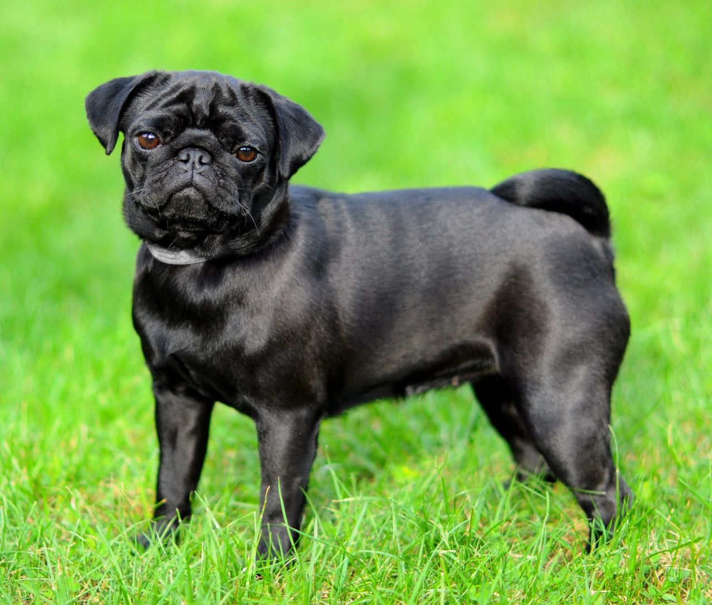
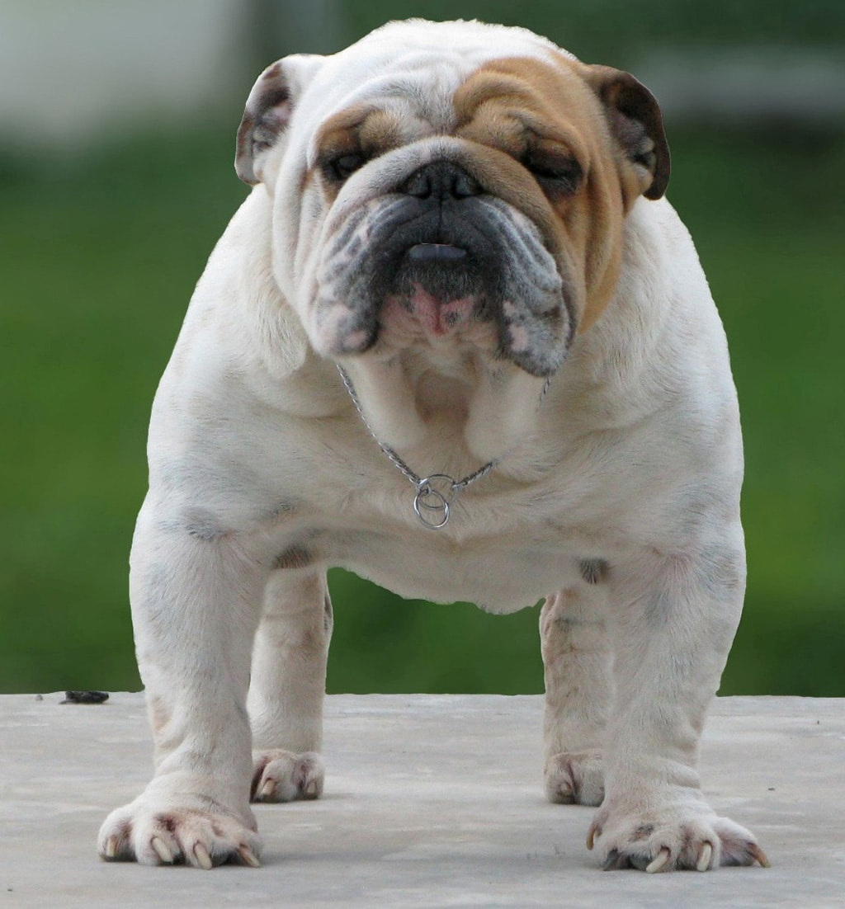

Design of Paw Play iOS app
Group project (apart of Rice University UI/UX program curriculum) to create an innovative native application for iOS devices using proven methodologies & strategies.
Overview
PAW PLAY is fictious tech startup providing online services to discriminating pet owners. The company is looking to deliver an innovative platform which matches like minded individuals for social activites (or "play dates")
Kobe's story
The inspiration for the new platform is a lovalable pit/english bull dog mix who has problems finding a open envoriment due to his initmidating physical appearance at dog parks.
Our Goal: Create an intutive service for customers like Kobe's owner to arrange "play dates" with "local" like minded individuals & pets.
Research & Analysis
We conducted a series of one-on-one interviews & an online survey to discover "pain points" in regards to scheduling (pet) "play dates".
User scenarios
Through our analysis of the data/feeback, we discovered serveral different scenarios of potential types of "Paw Play" users.
Personas (User/Pet)
We established that our personas consisted of: a) owner & pet and b) user type (who they would use app)
| Casual User | Extreme User | General User | |
|---|---|---|---|
| Name & Job Pet & Breed |
Chis, Pro Athlete Buster, Pug  |
Macy, Cust Service Rep Muffie, Mixed Breed  |
Tom, IT Analyst Max, Bulldog  |
| Age group | 18-24 y.o. | 25-34 y.o. | 35-44 y.o. |
| Motivation and benefits of product usage |
Chris is a new owner & adjusting to a fast paced life of professional athlete. |
Outgoing, loves bringing her dog EVERYWHERE! |
Active, Social & Drive Professional |
| Need and context of use |
A frequent traveler, he needs to be able to "schedule and forget it" when it comes Buster and his needs. |
Macy is looking for like minded pet owners to schedule "play dates" for her adventurous dog. |
Tom wants an efficient way to meet compatitable pets for "play dates" with Max. |
| Way to product |
Recommended by friends, acquaintances. Promotion or partnerships promotions/ads. |
Recommended by friends, acquaintances. Promotion or partnerships.promotions/ads. |
Recommended by friends, acquaintances. |
| Digital literacy |
Low |
Middle |
High |
By synthesising our user/pet persona combinations, we are able to build a intuitive flow for our application.
User Flow, Wireframing & Prototyping
We collectively defined a final "user flow" for the application (based on our research, user personas & empathy mapping). Each researcher then submitted a "Low-Fi" wireframe. We each presented our solutions, combined the designs and developed a user testing plan.
User testing
User testing is a technique used in UX design to evaluate a product by testing it on users. This can be seen as an irreplaceable usability practice, since it gives direct input on how real users use the system. So we decided to use this technique in our app with these tasks:
- Register a new account
- Log In
- Browse Compatiable Pets
- Select a Match
- Schedule a "Play Date"
| Ver 1 | Ver 2 | |
|---|---|---|
| Register a new account | 2 | 5 |
| Log In | 3 | 5 |
| Browse Compatiable Pets | 2 | 4 |
| Select a Match | 1 | 4 |
| Schedule a "Play Date" | 2 | 5 |
Design & Iteration
After agreeing the best elements of each individual wire frame, we produced a clickable prototype for our testing. We received some critical feedback on Version 1.0:
- They suggested having multiple choices for days & times.
- Making a clear differentiation between dog and owner profiles.
- Adding more descriptors for dog personalities and traits
This culminated in producing the Final Design of the application.
Results
In conclusion, we created a mobile application that is able to perform the necessary business objectives. User research gave us an distinct strategy of how to properly organize the structure of the application, providing the most positive user experience for Paw Play's users. We understood the shortcomings of the intial design of the application, which we revised & improved.
Most people make the mistake of thinking design is what it looks like. People think it’s this veneer – that the designers are handed this box and told “make it look good”. That’s not what we think design is. It’s not just what it looks like and feels like. Design is how it works. Steve Jobs, US computer engineer & industrialist.
This project clearly illustrates the power of effective collaboration & professionalism. Humbled to be apart of this process - cdm
Thank you.
I truly appreciate you taking the time to review this case study. I am truly passionate about delivering rich & intuitive solutions on both web & mobile. - cdm
Phone +1-832-454-6901
Email chad@urbanthang.com